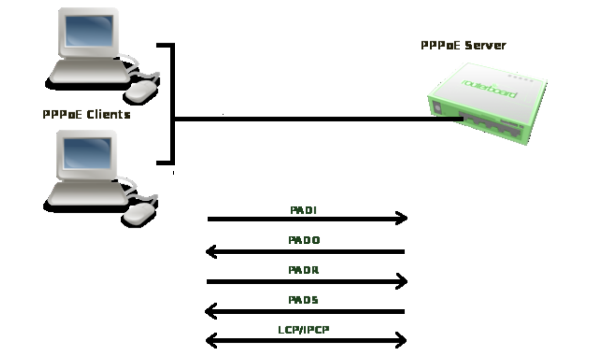
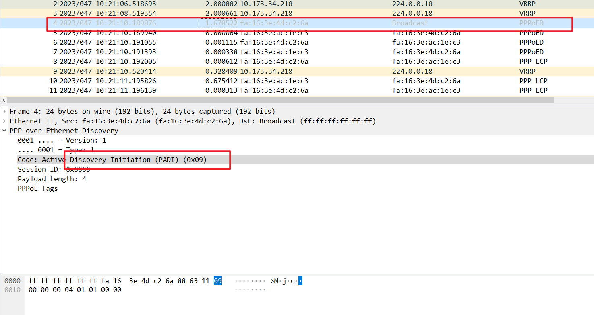
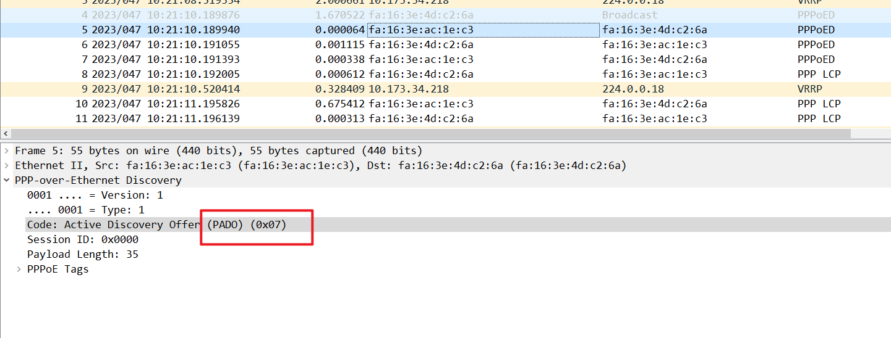
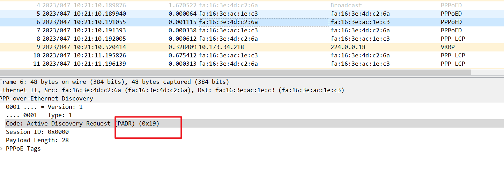
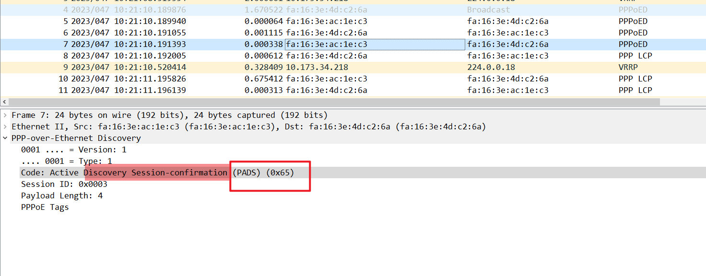
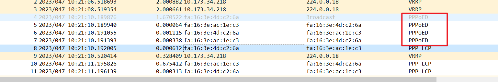
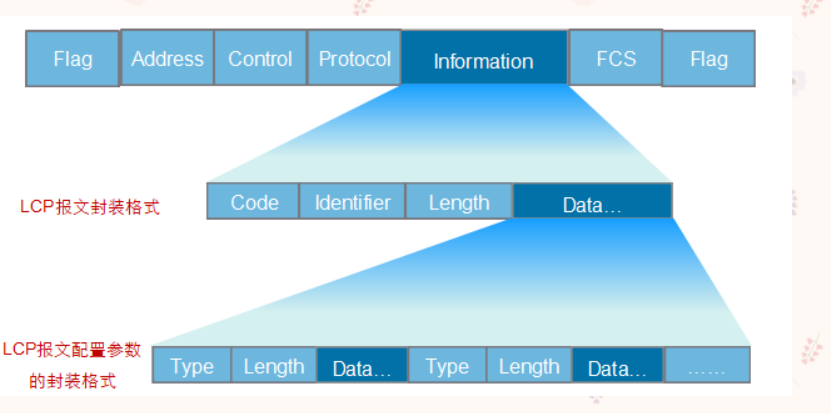
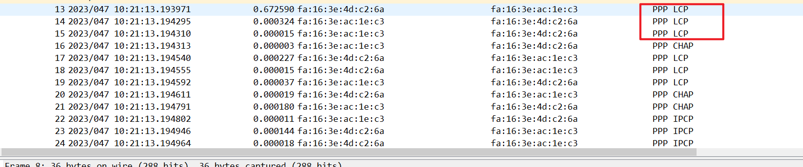
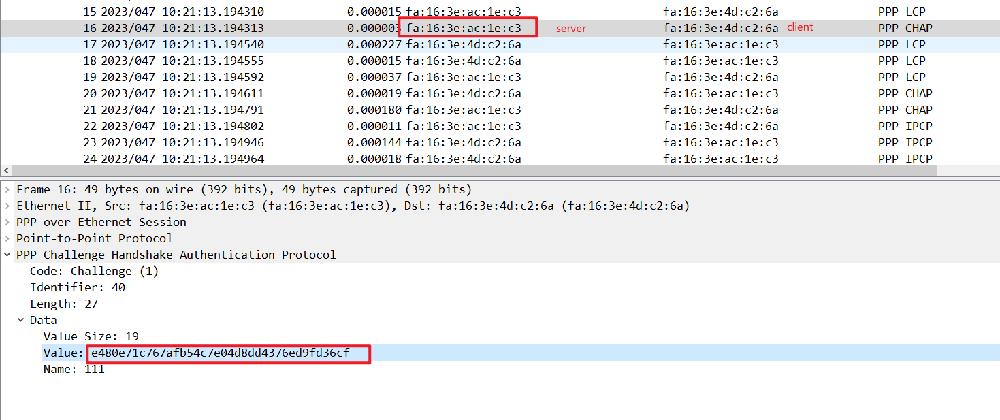

抓包学习 PPPOE报文
Contents
抓包学习 PPPOE报文
PPPoE报文是使用Ethernet格式进行封装的，Ethernet中各字段解释如下：
- DMAC：表示目的设备的MAC地址，通常为以太网单播目的地址或者以太网广播地址（0xFFFFFFFF）。
- SMAC：表示源设备的以太网MAC地址。
- Type：表示协议类型字段，当值为0x8863时表示承载的是PPPoE发现阶段的报文。当值为0x8864时表示承载的是PPPoE会话阶段的报文。
PPPoE字段中的各个字段解释如下：
- VER：表示PPPoE版本号，值为0x01。
- Type：表示类型，值为0x01。
- Code：表示PPPoE报文类型，不同取值标识不同的PPPoE报文类型。
- PPPoE会话ID：与以太网SMAC和DMAC一起定义了一个PPPoE会话。
- Length：表示PPPoE报文的Payload长度，不包括以太网头部和PPPoE头部的长度。
PPPOE工作原理：
PPPoE可分为三个阶段，即发现阶段、会话阶段和会话终结阶段。

Discovery阶段
-
PPPoE Client广播发送一个PADI( PPPoE Active Discovery Initial)报文,在此报文中包含PPPoEClient想要得到的服务类型信息。
在PADI报文中，目的MAC地址是一个广播地址，Code字段为0x09，Session ID字段为0x0000。 
-
所有的 PPPoE Server收到PADI报文之后,将其中请求的服务与自己能够提供的服务进行比较,如果可以提供,则单播回复一个PADO( PPPoE Active Discovery Offer)报文。
在PADO报文中，目的地址是发送PADI报文的客户端MAC地址，Code字段为0x07，Session ID字段为0x0000。

-
根据网络的拓扑结构, PPPoE Client可能收到多个 PPPoE Server发送的PADO报文, PPPoE Client选择最先收到的PADO报文对应的 PPPoE Server作为自己的 PPPoE Server,并单播发送一个PADR( PPPoEActive Discovery Request)报文。
在PADR报文中，目的地址是选中的服务器的MAC地址，Code字段为0x19，Session ID字段为0x0000。 
-
PPPoE Server产生一个唯的会话ID( Session ID),标识和 PPPoE Client的这个会话,通过发送个PADS( PPPoE Active Discovery Session- confirmation)报文把会话ID发送给 PPPoE Client。
PADS报文中，目的地址是PPPoE客户端的MAC地址，Code字段为0x65，Session ID字段是PPPoE服务器为本PPPoE会话产生的Session ID。 
会话建立成功之后通信双方都会知道PPPoE的 Session_ID以及对方的以太网地址,它们共同确定了唯一的 PPPOE Session。 
Session阶段

PPPoE Session阶段可划分为两部分,一是PPP协商阶段,二是PPP数据传输阶段。
PPPoE Session上的PPP协商和普通的PPP协商方式一致,分为LCP、认证、NCP3个阶段。

(1)LCP阶段主要完成建立、配置和检测数据链路连接。
(2)LCP协商成功后,开始进行认证,认证协议类型由LCP协商结果(CHAP或者PAP)决定。
 (3)认证成功后,PPP进入NCP阶段。NCP是一个协议族,用于配置不同的网络层协议,常用的是IP控制协议(IPCP),它主要负责协商用户的IP地址和DNS服务器地址。
PPPoE Session的PP协商成功后,就可以承载PPP数据报文。
在 PPPoE Session阶段所有的以太网数据包都是单播发送的。
Terminate阶段
PPP通信双方可以使用PPP协议自身来结束 PPPoE会话,当无法使用PPP协议结束会话时可以使用PADT( PPPoE Active Discovery Terminate)报文。
进入 PPPoE Session阶段后, PPPoE Client和 PPPoE Server都可以通过发送PADT报文的方式来结束PPPoE连接。PADT数据包可以在会话建立以后的任意时刻单播发送。在发送或接收PADT后,就不允许再使用该会话发送PPP流量了。
PPPoE协议报文总结
- PADI（PPPoE Active Discovery Initiation）报文：用户主机发起的PPPoE服务器探测报文，目的MAC地址为广播地址。
- **PADO（PPPoE Active Discovery Offer）报文：**PPPoE服务器收到PADI报文之后的回应报文，目的MAC地址为客户端主机的MAC地址。
- PADR（PPPoE Active Discovery Request）报文：用户主机收到PPPoE服务器回应的PADO报文后，单播发起的请求报文，目的地址为此用户选定的那个PPPoE服务器的MAC地址。
- PADS（PPPoE Active Discovery Session Configuration）报文：PPPoE服务器分配一个唯一的会话进程ID,并通过PADS报文发送给主机。
- PADT（PPPoE Active Discovery Terminate）报文：当用户或者服务器需要终止会话时,可以发送这种PADT报文。
Author smasterfree
LastMod 2023-02-05